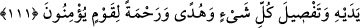

ALLAH’A BASÎRETLE DÂVET
108. De ki: “İşte benim yolum budur. Ben ve bana uyanlar, Allah’a basiretle dâvet
ederiz. Allah’ın şanı yücedir, ben ortak koşanlardan da değilim.
109. Senden önce de şehirler halkından kendilerine vahyettiğimiz erkeklerden
başkasını peygamber göndermedik. Yeryüzünde hiç gezmediler mi ki kendilerinden
öncekilerin sonunun nasıl olduğunu görsünler!? Muttakîler için âhiret yurdu daha
hayırlıdır. Aklınızı kullanmıyor musunuz?
110. Nihâyet peygamberler ümitlerini yitirip de kendilerinin yalana
çıkarıldıklarını sandıkları sırada onlara yardımımız gelir ve dilediğimiz kimseler
kurtuluşa erdirilir. (Fakat) suçlular topluluğundan azabımız asla geri çevrilmez.
111. Andolsun onların (geçmiş peygamberler ve ümmetlerinin) kıssalarında akıl
sahipleri için pek çok ibretler vardır. (Bu Kur’an) uydurulabilecek bir söz değildir.
Fakat o, kendinden öncekileri tasdik eden, her şeyi açıklayan (bir kitaptır); îman
eden toplum için bir hidâyet ve rahmettir.
“De ki: “İşte benim yolum budur.” Yani benim yolum, îmana ve tevhîde dâvet
etmekten ibâret olan yoldur. “Ben ve bana uyanlar Allah’a” yani O’nun dînine, tâatine
ve diriliş günü verileceği vaad edilen sevaba “basîretle” yani hedefe ulaştıran apaçık
bir beyan ve delil ile “dâvet ederiz.” Allah’a hem ben dâvet ederim hem de bana
uyanlar dâvet eder.
Delil, basîret üzere olduğu zaman irşad ve hidâyet edebilir. Basîreti bağlı olduğu
zaman ise böyle değildir.
“Allah’ın şânı yücedir.” Allah’ı bütün ortaklardan kesinlikle tenzih ederim. “Ben